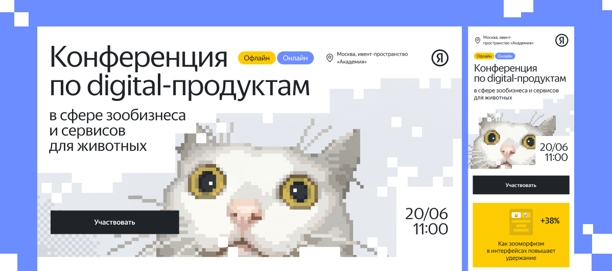
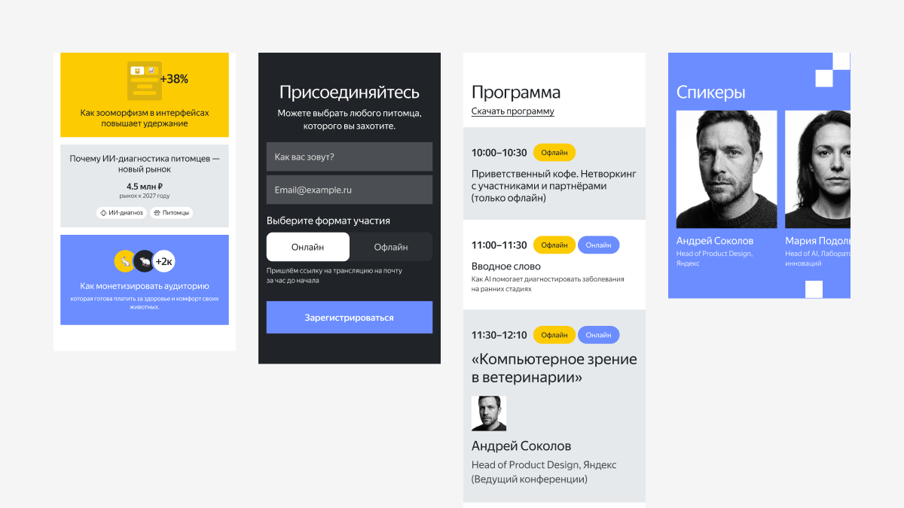
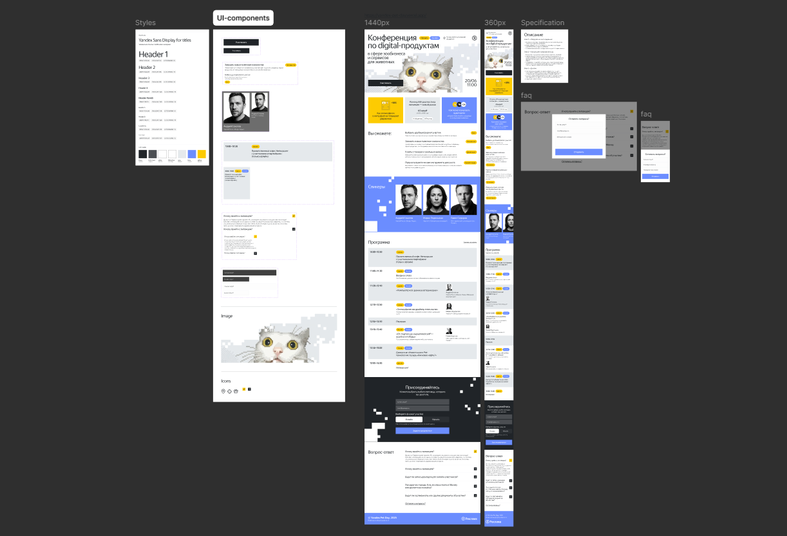
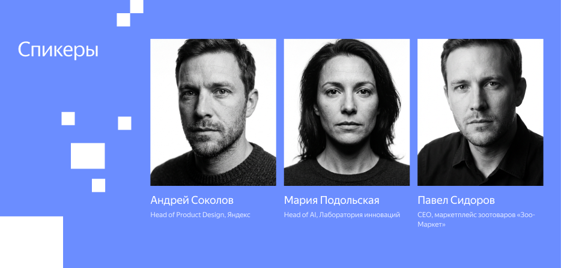
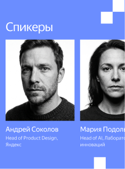
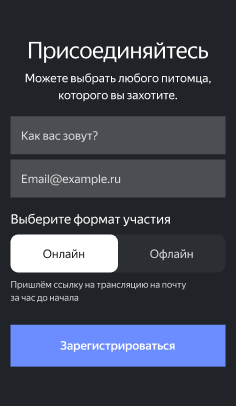
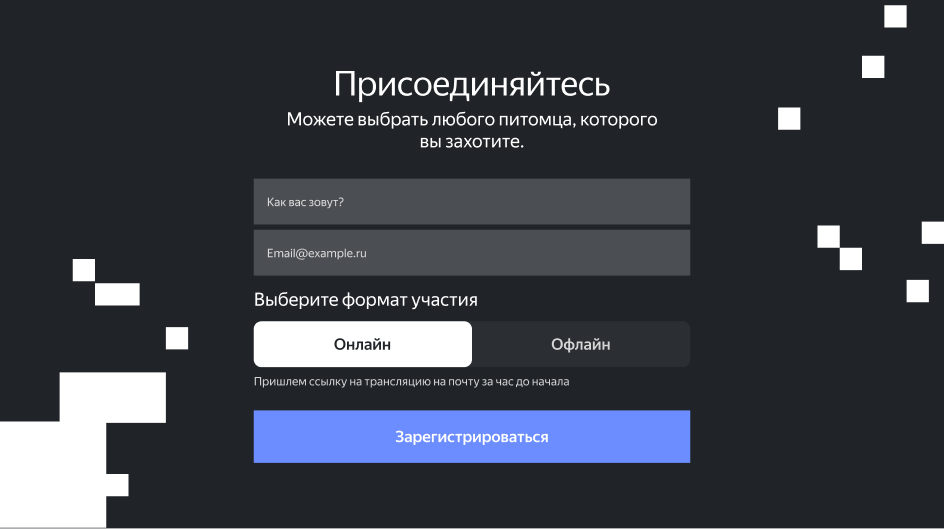

Лендинг для конференции Yandex по digital-продуктам в сфере зообизнеса
- Бренд
- Yandex
- Тематика
- Digital / Зообизнес
- Год
- 2025

О компании
Яндекс — технологическая компания, развивающая цифровые продукты и сервисы для повседневной жизни. Объединяет экспертизу в области искусственного интеллекта, аналитики и современных технологий, создавая решения для пользователей и бизнеса в различных отраслях.

Проблема
Для конференции Yandex Pet Day требовалось разработать лендинг, который познакомит аудиторию с мероприятием, раскроет его ценность и поможет пользователям выбрать удобный формат участия. Важно было объединить большой объём информации в понятную структуру и создать визуальный стиль, соответствующий тематике события.
- Разработать выразительную визуальную концепцию с учётом фирменного стиля Яндекса.
- Продумать структуру страницы и расставить акценты на ключевой информации.
- Представить программу конференции, спикеров и преимущества участия.
- Создать удобную форму регистрации с выбором онлайн- или офлайн-формата.
- Обеспечить понятную навигацию и доступность информации на разных устройствах.
- Подготовить адаптивные макеты для десктопной и мобильной версий сайта.





Что получилось
В результате был разработан адаптивный лендинг конференции Yandex Pet Day с яркой визуальной концепцией, объединяющей digital-эстетику и pet-тематику.
- Разработан узнаваемый графический образ с пиксельным котом в главной роли.
- Подобрана цветовая палитра и типографика, сочетающиеся со стилем Яндекса.
- Создана понятная структура с программой, спикерами и информацией о мероприятии.
- Продумана форма регистрации с выбором онлайн- и офлайн-участия.
- Разработаны десктопная и мобильная версии сайта.
- Подготовлена система компонентов для единообразного оформления интерфейса.
В итоге получился современный и дружелюбный интерфейс, который передаёт характер конференции, помогает быстро находить нужную информацию и упрощает запись на мероприятие.